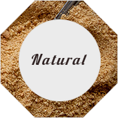

Products
- 
Tarts
Everyone loves a little, or sometimes large, sweet thing now and again, that's where we come in! Try our delectable, delicious, dreamy tarts by the slice, or order a whole one for any special occasion
Cupcakes
Our cupcake are not just baked goods, but artistic, customized creations that you won’t find anywhere else.
All of our cupcakes are made from scratch with love, using local & premium ingredients. Each cupcake is specially prepared by our lovely bakers, each with its own individual flair
Cakes
The uniqueness of our cakes lies in the guarantee that each and every cake from our bakery is passionately hand-made and packed full with the best quality premium ingredients.
All cakes are made using traditional baking methods with the emphasis on making a consistent product, ensuring that every cake is as good as the last.


Macarons
You’ve never tasted anything like a macaron, until you’ve bitten into one. There’s truly nothing like it. With a light crunch on the outside, followed by a soft, melt-in-your-mouth, flavor-filled interior, macarons are unexpected - in the best way. You definitely won’t forget your first macaron